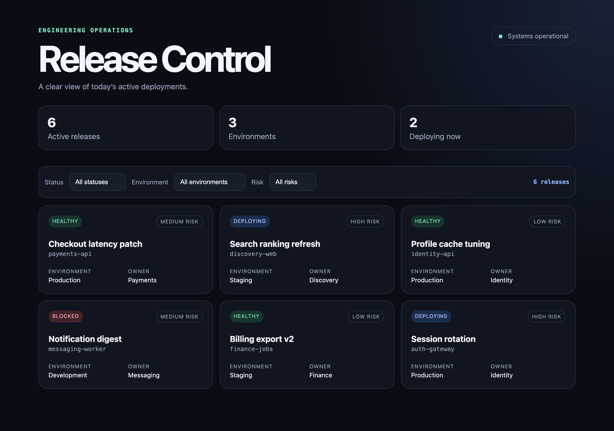
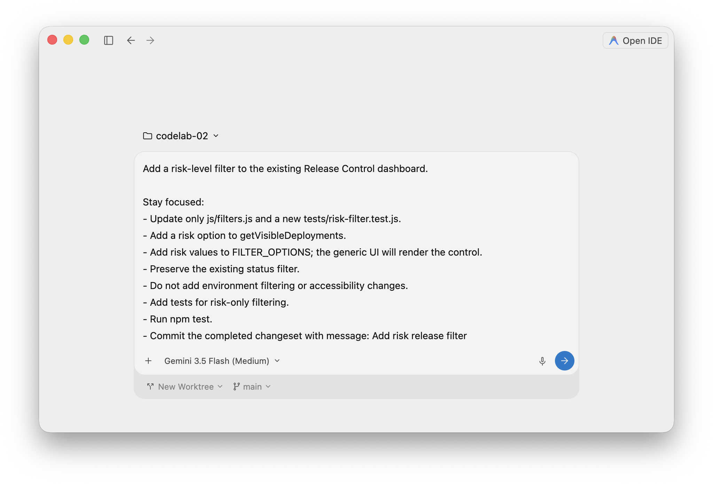
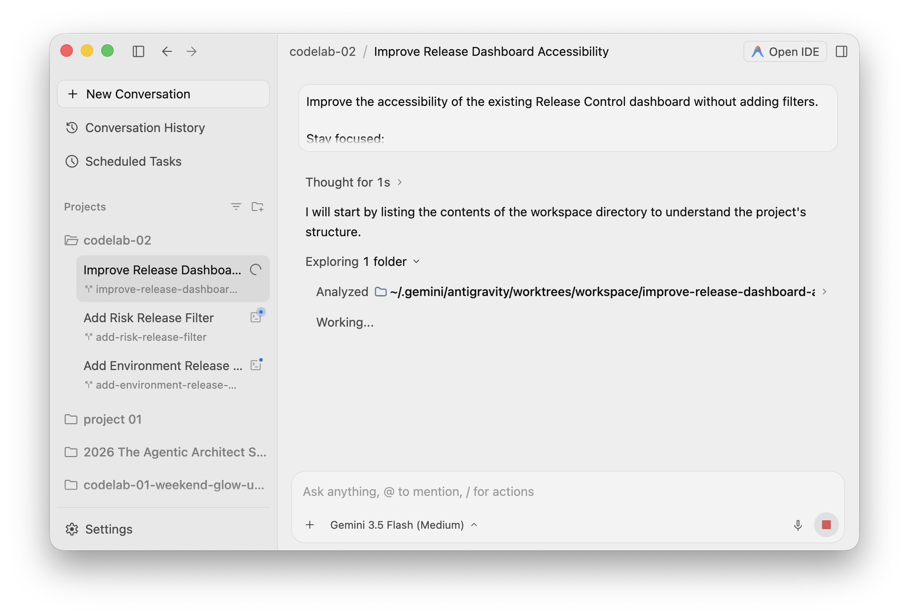
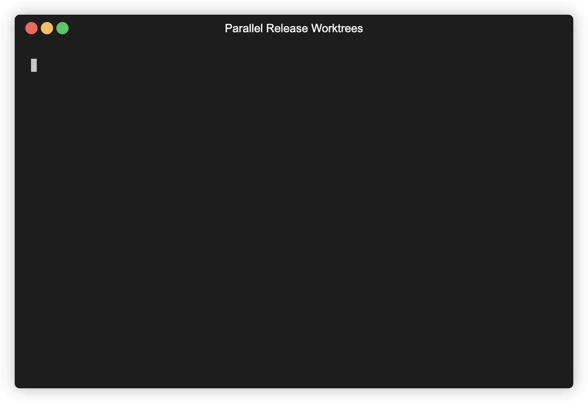
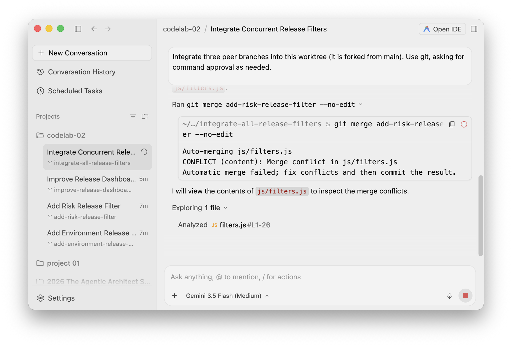
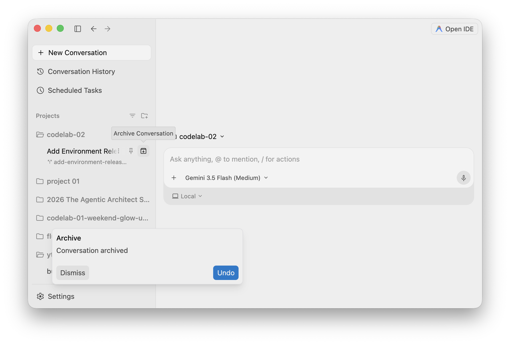
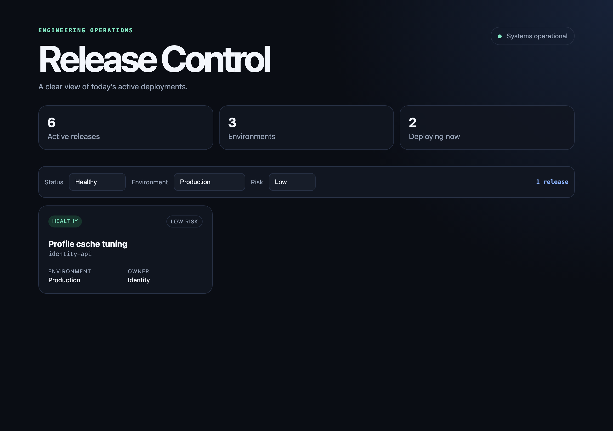

This codelab is part of the 2026 Agentic Architect Sprint by Google.
It focuses on protecting the live filesystem and Git history while peer agents develop concurrent changesets — each agent works in an isolated Git worktree, so none of them edit the live checkout.
You begin with a finished Developer Release Dashboard. Three agents work in isolated Git worktree directory shadows:
The live main checkout stays untouched. You inspect each branch, integrate all three, resolve one intentional conflict, verify the combined UX, and clean up the temporary workspaces.
A verified release of a finished Developer Release Dashboard that combines three concurrently developed changesets:
The integrated dashboard's default view shows every release across the status, environment, and risk filters:

Download and install Antigravity 2.0 from:
This codelab uses Antigravity 2.0 — the desktop command center, which has the white logo. Do not use the Antigravity IDE (black logo); it is a different product surface, and the native isolated-worktree workflow taught here is driven from the 2.0 desktop app. Confirm the app you open shows the white logo before continuing.
Follow the current onboarding and sign-in flow shown by the application.
Choose the path available to you:
If you use the enterprise path, ask your administrator to complete the documented setup:
aiplatform.googleapis.com.roles/serviceusage.serviceUsageAdmin.roles/aiplatform.user.The enterprise guide documents supported Antigravity endpoints as global, eu, and us. Follow your organization's selected configuration.
Official reference: Use Antigravity with Gemini Enterprise Agent Platform
This codelab also requires Git and Node.js 20+, and it intentionally requires Antigravity 2.0's native isolated worktree mode; a manual Git-worktree substitute would miss the featured 2.0 product capability and the lesson.
git --version
node --version
Confirm that the product exposes its native isolated-worktree execution action before continuing.
Official references:
This codelab starts from a finished Developer Release Dashboard in workspace/ — a static app that already renders release cards and supports status filtering, with a passing test suite. You let peer agents add environment filtering, risk filtering, and accessibility improvements across isolated worktrees; you do not build the dashboard yourself.
Pull down just the workspace/ folder with a sparse checkout, then turn it into a disposable Git repository (the worktrees you create later attach to this repo):
git clone --no-checkout --depth 1 https://github.com/evanca/gde-sprint-26-worktrees-public.git
cd gde-sprint-26-worktrees-public
git sparse-checkout init --cone
git sparse-checkout set workspace
git checkout
cd workspace
git init -b main
git add .
git commit -m "Add finished release dashboard starter"
npm test
Run the dashboard:
python3 -m http.server 8080
Open http://localhost:8080/. Confirm the existing status filter works, then stop the server.
Record the baseline commit and verify the checkout is clean:
git status --short
git log --oneline -1
Open workspace/ in Antigravity 2.0. For each task brief below, paste the brief as the goal and launch the agent in New Worktree mode.
In the composer, two controls sit under the prompt:
New Worktree): keep it on New Worktree so the agent runs in an isolated worktree instead of your live folder (Local Mode).main): this is the branch the new worktree is forked from, not the name of the branch it creates. Leave it on main.Antigravity 2.0 creates each isolated worktree and assigns its branch automatically, deriving the name from the task goal. Note the branch name it assigns to each task — you will merge those branches by name later. The branch names below are examples; substitute the ones your run assigns.
Task 1 — Environment filter (example branch add-environment-release-filter):
Add an environment filter to the existing Release Control dashboard.
Stay focused:
- Update only js/filters.js and a new tests/environment-filter.test.js.
- Add an environment option to getVisibleDeployments.
- Add environment values to FILTER_OPTIONS; the generic UI will render the control.
- Preserve the existing status filter.
- Add tests for environment-only filtering.
- Do not add risk filtering or accessibility changes.
- Run npm test.
- Commit the completed changeset with message: Add environment release filter
Task 2 — Risk filter (example branch add-risk-release-filter):
Add a risk-level filter to the existing Release Control dashboard.
Stay focused:
- Update only js/filters.js and a new tests/risk-filter.test.js.
- Add a risk option to getVisibleDeployments.
- Add risk values to FILTER_OPTIONS; the generic UI will render the control.
- Preserve the existing status filter.
- Add tests for risk-only filtering.
- Do not add environment filtering or accessibility changes.
- Run npm test.
- Commit the completed changeset with message: Add risk release filter
Task 3 — Accessibility (example branch improve-release-dashboard-accessibility):
Improve the accessibility of the existing Release Control dashboard without adding filters.
Stay focused:
- Update only index.html, css/index.css, and js/app.js.
- Give the release section and filter toolbar clear accessible names.
- Make result-count changes announce through a polite live region.
- Add a strong visible focus style.
- Preserve existing status-filter behavior.
- Do not edit js/filters.js or tests/filters.test.js.
- Run npm test.
- Commit the completed changeset with message: Improve release filter accessibility
Launch all three before waiting for results. Antigravity 2.0 creates each isolated directory shadow, runs the peer agent there, and leaves a focused branch for review. Observe the product's workspace indicators while the agents run.
Each agent pauses for approval before it runs a command such as npm test. When prompted, choose "Yes, and always allow ‘npm test' in this project" so the remaining agents and the integration step do not re-prompt. The agent then finishes its changeset and commits on its own branch.
Each agent launches from the composer in New Worktree mode:

With all three launched, the peer agents run concurrently in separate isolated worktrees:

Because the agents run concurrently, the parallel wall-clock time is approximately the longest single task, whereas running them one at a time would take the sum of all three.
Official reference: Antigravity 2.0 getting started
Return to the live checkout:
cd workspace
git worktree list
git status --short
git log --oneline --all --graph --decorate
git worktree list prints the path and branch of each worktree. Antigravity creates the worktrees under your home directory (for example ~/.gemini/antigravity/worktrees/) and names each branch after the task. In a typical run the branches are add-environment-release-filter, add-risk-release-filter, and improve-release-dashboard-accessibility. Use the names from your own git worktree list in the commands below.

The live checkout should still be clean. Review each changeset before integration:
git diff main..add-environment-release-filter --stat
git diff main..add-risk-release-filter --stat
git diff main..improve-release-dashboard-accessibility --stat
The feature agents both change js/filters.js. Their separate tests should make each intent clear. The accessibility agent owns different files and should merge cleanly.
Start a new conversation in New Worktree mode from main. This forks a clean fourth worktree — your integration workspace. Its branch is auto-named too (for example integrate-all-release-filters).
Give the integration agent this goal, substituting the branch names from your own git worktree list:
Integrate three peer branches into this worktree (it is forked from main). Use git, asking for command approval as needed.
1. Merge these branches into the current branch, in this exact order:
- improve-release-dashboard-accessibility
- add-environment-release-filter
- add-risk-release-filter
2. The third merge conflicts in js/filters.js. Resolve it so status, environment, and risk filtering all work together: the selector in getVisibleDeployments must require every active filter to match (matchesStatus && matchesEnvironment && matchesRisk), and FILTER_OPTIONS must contain status, environment, and risk. Do not discard either feature branch's intent.
3. Add tests for a combined multi-filter match and a no-match case.
4. Run npm test until everything passes.
5. Commit the integrated result with message: Integrate concurrent release filters
Then explain how you resolved the conflict.
The first two merges (accessibility, then one feature branch) apply cleanly; the third stops at a conflict in js/filters.js because both feature branches edited it. Approve the git and npm test commands when the agent prompts.
As the agent works the third merge, it hits the planned conflict in js/filters.js and opens the file to resolve it:

Review the resolution before moving on. The selector must require every active filter to match; it must not choose one branch wholesale. Confirm npm test is green and the agent committed Integrate concurrent release filters.
Run the integrated dashboard:
python3 -m http.server 8080
Open http://localhost:8080/ and verify:
The automated suite confirms the combined filtering and the integrated build:
If the agents' output differs and the suite fails, compare against the completed build in the reference/ folder of the codelab repository.
Return to the live checkout and fast-forward the verified integration. Use the integration branch name from your git worktree list (for example integrate-all-release-filters):
cd workspace
git merge --ff-only integrate-all-release-filters
npm test
In Antigravity 2.0, archive the four completed workspaces (each conversation's Archive action):

Archiving the conversation does not delete its worktree directory, so remove the worktrees explicitly from the live checkout, then prune and confirm only main remains (substitute the paths from your git worktree list):
git worktree remove ~/.gemini/antigravity/worktrees/workspace/add-environment-release-filter
git worktree remove ~/.gemini/antigravity/worktrees/workspace/add-risk-release-filter
git worktree remove ~/.gemini/antigravity/worktrees/workspace/improve-release-dashboard-accessibility
git worktree remove ~/.gemini/antigravity/worktrees/workspace/integrate-all-release-filters
git worktree prune
git worktree list
Delete the merged temporary branches. All four delete with -d (not -D), which confirms every changeset reached main:
git branch -d add-environment-release-filter add-risk-release-filter improve-release-dashboard-accessibility integrate-all-release-filters
You shipped a combined release from concurrent agent changesets without allowing any agent to edit the live checkout.
You practiced:
In the shipped release, the three concurrently built filters work together — combining status, environment, and risk narrows the dashboard to a single matching release:

Worktrees solve filesystem isolation. They do not remove the need for architectural judgment at integration boundaries.